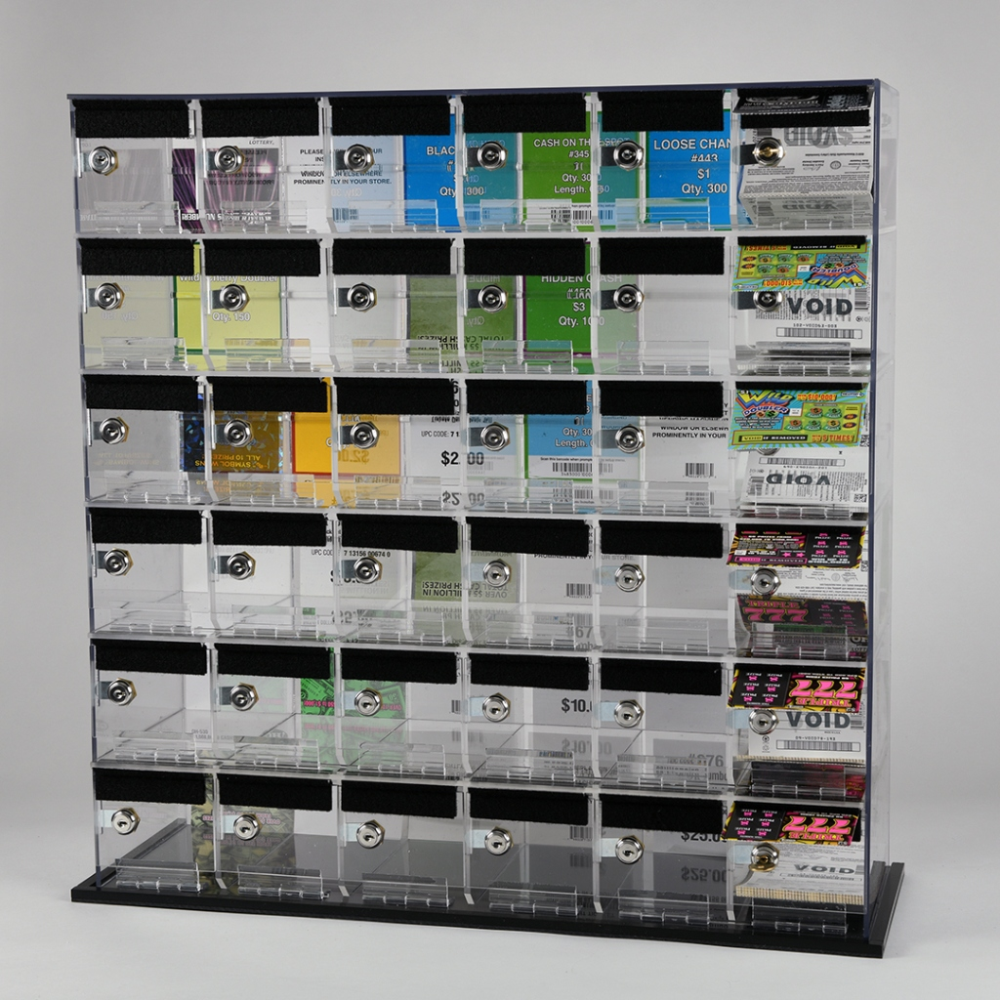

Retail lottery POS and shift tracking
Stop handwriting your lottery logs.
LottoTrack Pro tracks every scratch-off pack, keeps your inventory and sales up to date, and helps balance your cash drawer at the end of the shift.
Works in any browser. Can also be installed as a standalone app on your device.

Physical Dispenser Rack

Live Counter POS System
The Challenge
Lottery paperwork is slow. Mistakes make it worse.
At the end of a busy shift, you shouldn't have to rebuild what happened from handwritten notes and a calculator.
- Writing ticket numbers by hand takes time and gives mistakes another place to start.
- One wrong number can throw off your sales and your reconciliation.
- The drawer doesn't match, and now you have to work out where the difference came from.
- Inventory isn't clear. You shouldn't have to check every box just to know what's left.
Live System Screenshot
Real-time Dispenser Stock & Audit Dashboard
LottoTrack replaces handwritten paperwork with instant visibility into every box, pack and ticket.
Three things happen. You do the scanning.
1
Scan it.
Scan a pack when it arrives. Scan a ticket when you sell it. No typing long ticket numbers.
2
LottoTrack keeps up.
Inventory, ticket positions, sales and sold-out packs update as you work.
3
Get the report.
When the shift is finished, your reports are ready to print, export or email.
You scan. LottoTrack keeps the record.
One record from pack to sale.
LottoTrack Pro follows each pack from delivery to the finished shift report. The steps below show where the record is made.


The work happens at the counter. The record stays connected.
Less paperwork for you. Less guesswork for them.
For the store owner:
- Save time at the end of the shift. Sales are calculated from the ticket positions recorded during the shift.
- Catch problems early. See whether the drawer is balanced, over or short.
- Know what's in your rack. See active packs, tickets remaining, sold-out packs and stored inventory.
- Check in without being there. Add an email in Settings and receive the shift report when the shift closes.

For the person behind the counter:
- Large controls. Clear buttons and number pads make common actions easy.
- Spoken prompts. Audio feedback guides scanning and workflow steps.
- Built-in quick guide. The basic workflow is explained inside the system.
- Easy shift handoff. Switch the active cashier and continue with the next shift.
Know what the drawer should contain.
Ticket sales, payouts and your starting float come together to calculate the cash you should have. Online sales and cashouts can be entered too.
If the numbers don't match, you'll see Over or Short.
Balanced
($466 counted against expected $466)
Over
($480 counted against expected $466)
Short
($450 counted against expected $466)
Made a mistake? Fix it.
ticket entered 0187
Fix Position
correct position 0186
- Wrong ticket number? Use Fix Position.
- Wrong box? Switch boxes or change the box number.
- Pack finished? Mark it sold out.
- Taking a pack off the counter? Return it to the Lottery or move it to storage for later.
You don't have to start over because one number was wrong.
Everything in one place.
- Dispenser rack: manage up to 65 boxes, with the game, ticket position and tickets left.
- Pack inventory: active, sold-out and stored packs, with their value.
- Scan history: barcode scans saved with the time they were scanned.
- Shift tracking: shift mode or daily mode.
- Cash reconciliation: balanced, over or short.
- Reports: shift, day, receipt, email and export.
Frequently Asked Questions
Do I need to install anything?
No installation is required. LottoTrack Pro runs directly in your web browser. You can also install it as a standalone app on your computer or tablet for a full-screen, app-like experience.
How do I sell a ticket?
Scan the ticket barcode, or press +1 on that box.
What if I enter the wrong ticket number?
Open the box and use Fix Position to correct it.
Can more than one person use it?
Yes. You can switch the active cashier, and each shift report records who worked that shift.
Can I return or store unsold packs?
Yes. Packs can be returned or moved into storage and loaded again later.
Will it work with my state's lottery?
The current day report follows the Georgia Lottery layout. Contact us to ask about your state.
Ready to leave the paper behind?
Put the paper reconciliation away.
See how LottoTrack Pro can handle your lottery counter, from the first scan to the finished shift report.
Contact LottoTrack Pro
Phone: [PHONE NUMBER]
Email: [EMAIL ADDRESS]